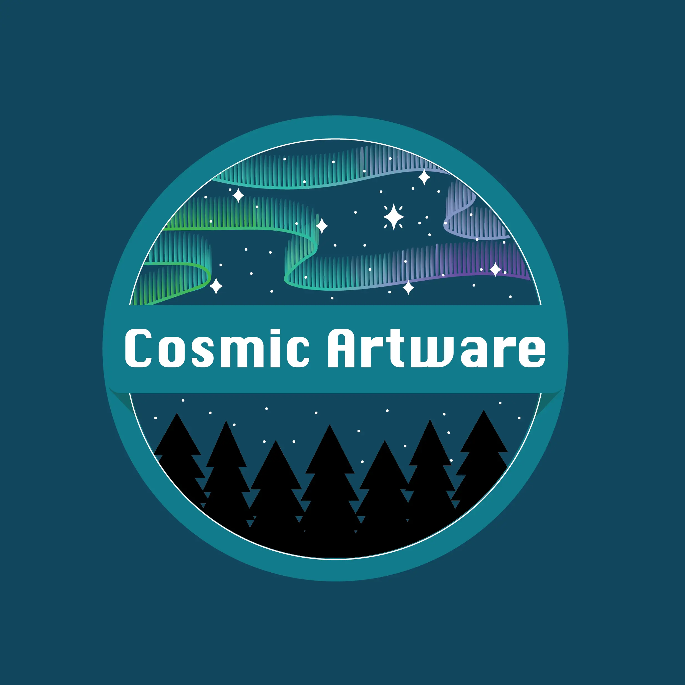
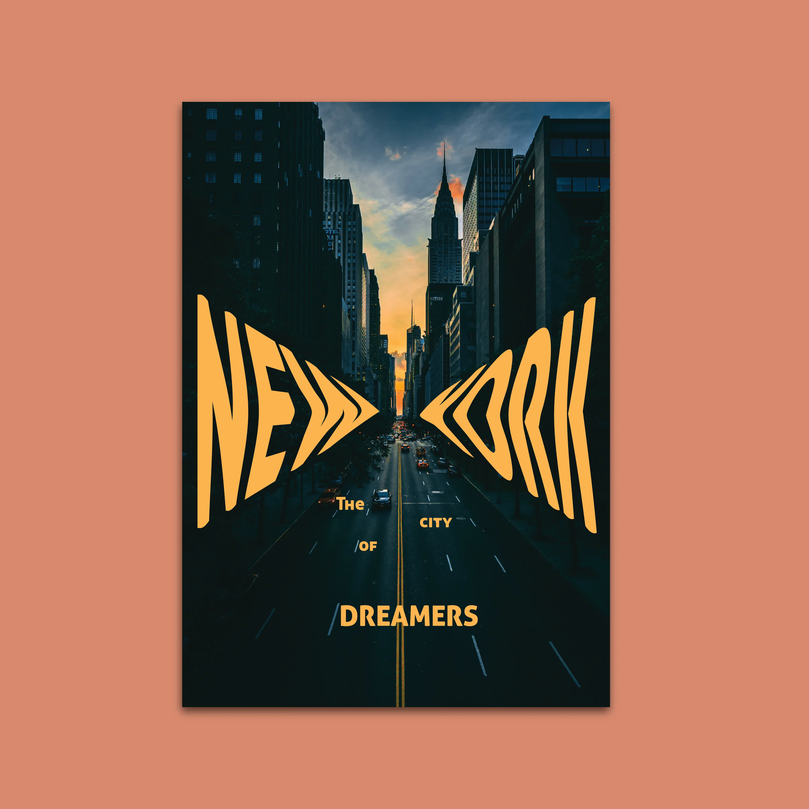
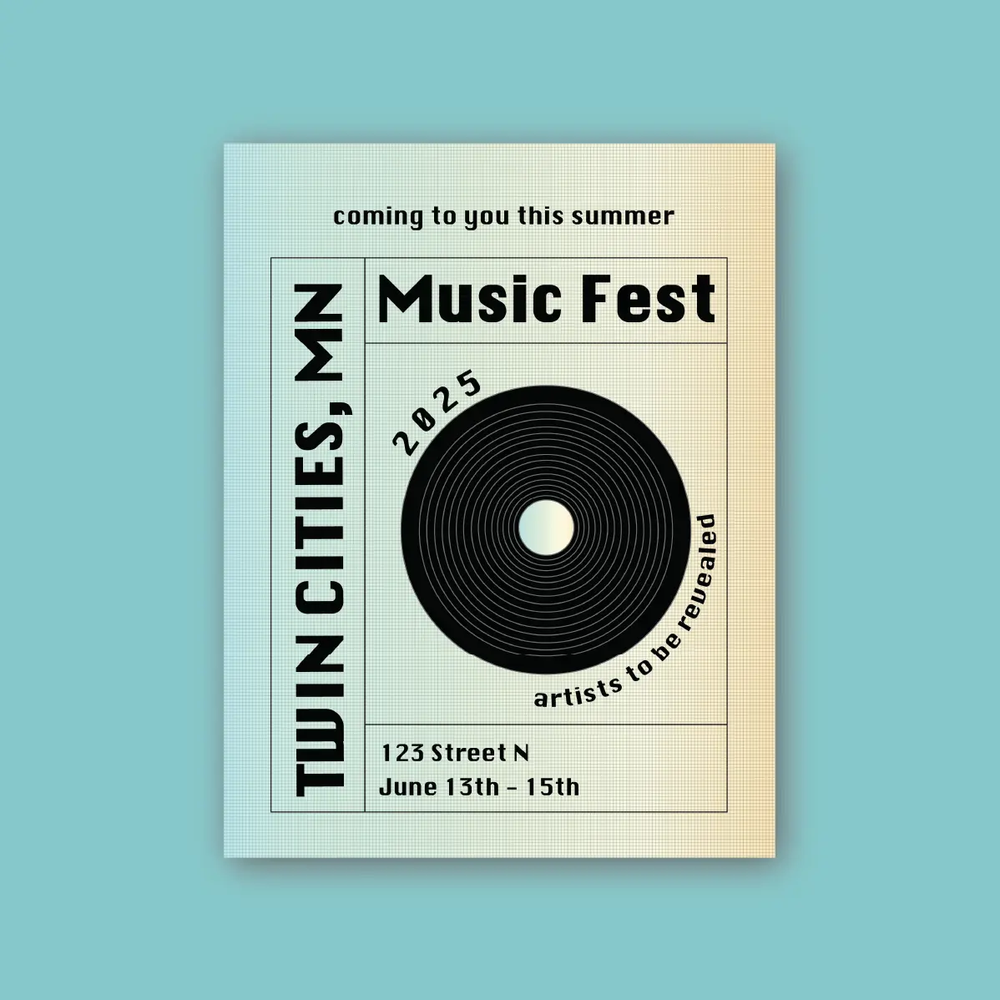
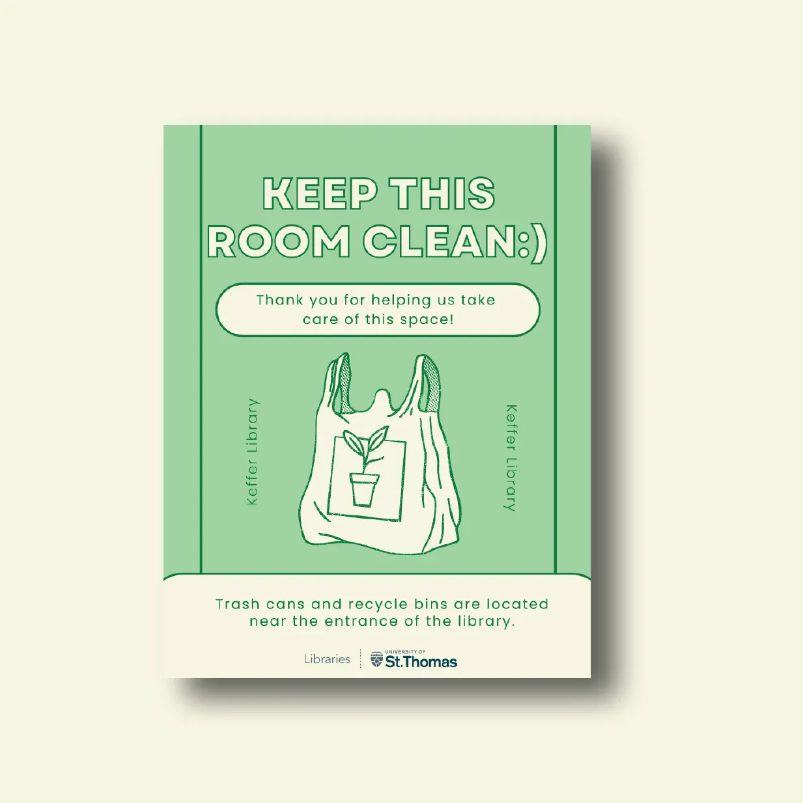
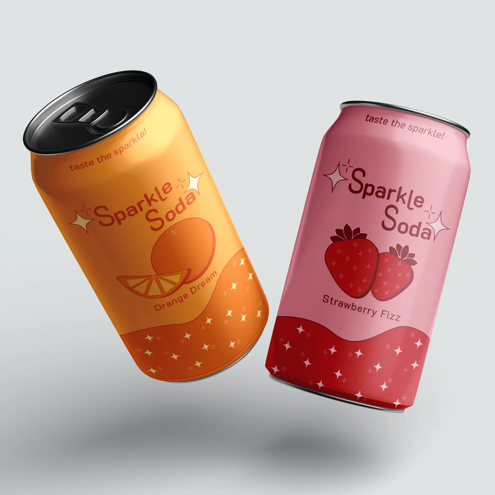
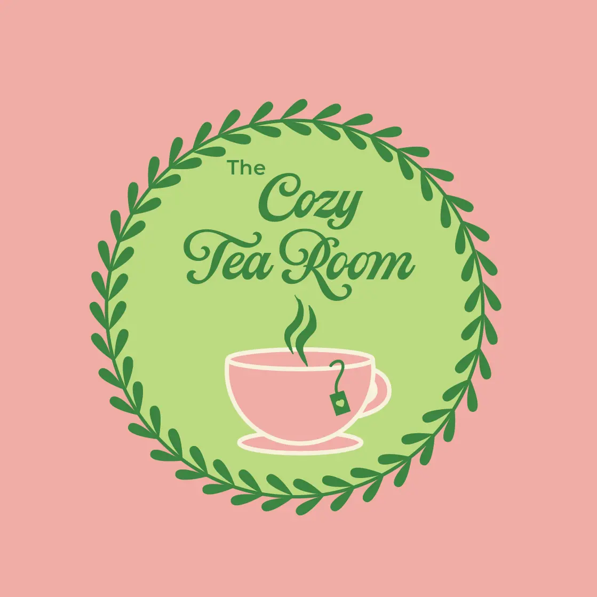
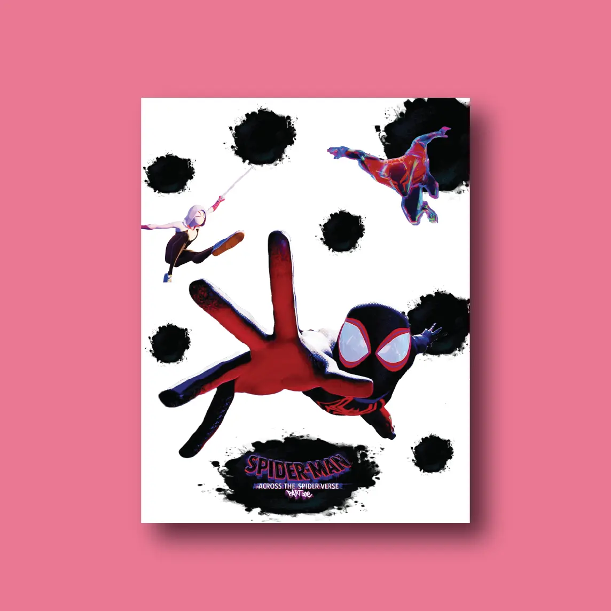
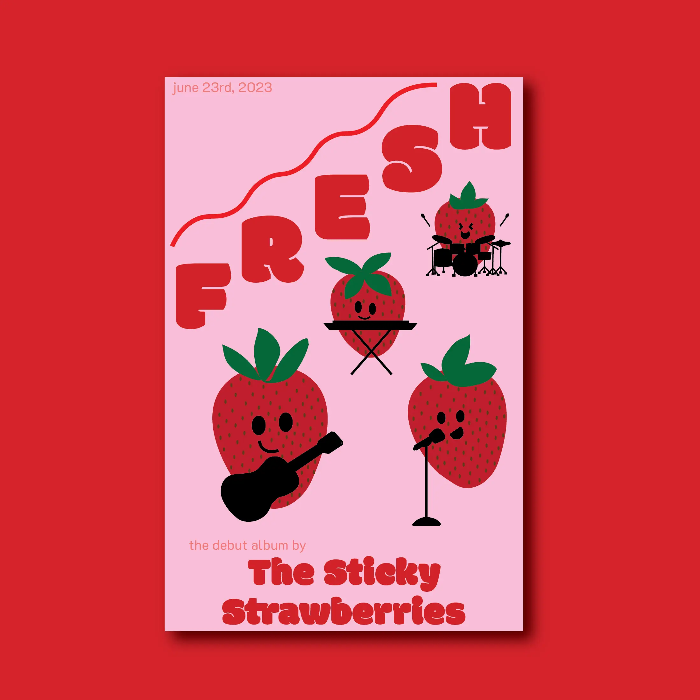

A fun and modern rebrand of the company. Designs include a new logo, business card, and packaging inserts; all displayed in this case study.

A poster I made just for fun to play around with type and imagery. It's bold and visually playful to draw the eye to the center.

A mock promotional flyer design for a hypothetical music festival in the Twin Cities. Made to feel retro and fun to invite the audience.

A flyer I was asked to make for work. This flyer is displayed in study rooms within the University of St. Thomas' libraries.

A simple yet effective design made for a class project. Created using Adobe Illustrator and Photoshop, full of sparkle and flavor.

A pastel and cute logo made for a mock company that emphasizes the cozy and aesthetic feel the company is meant to present.

A poster made for a class assignment to represent a movie I love. The poster plays into visual heirarchy to represent the plot of the movie.

A poster made to promote a fictional fruit band's new album. This was made as part of an assignment for an online course.